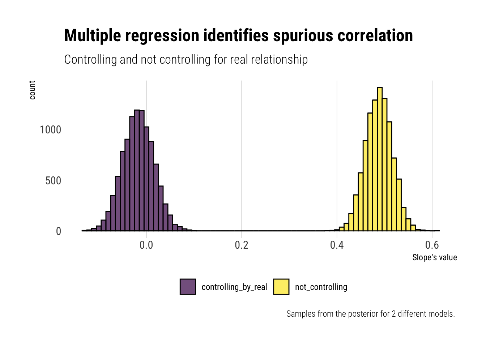
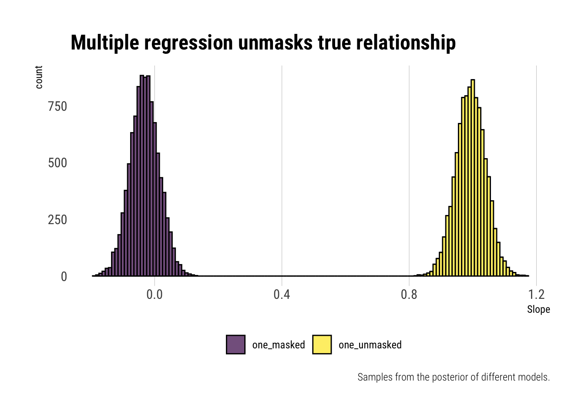
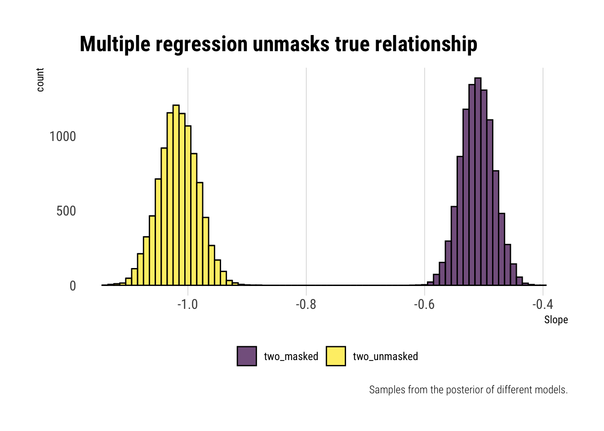
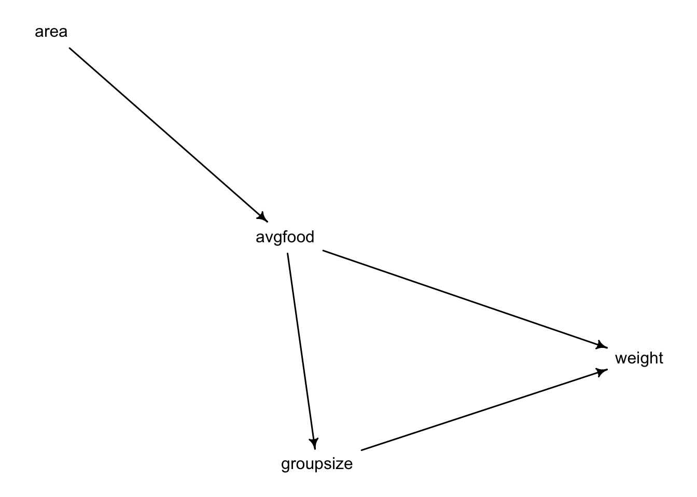
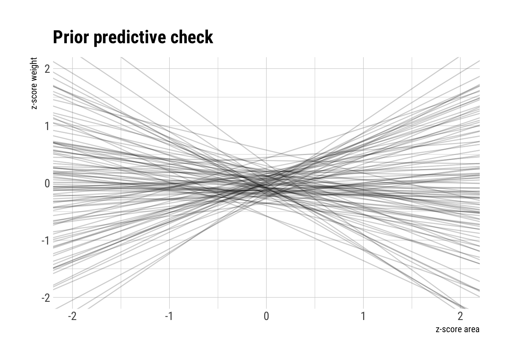
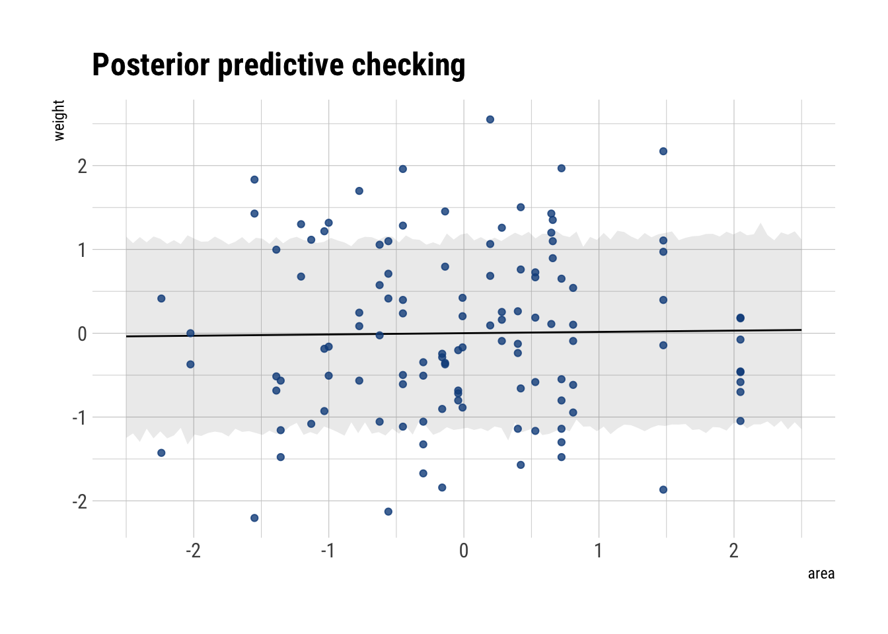
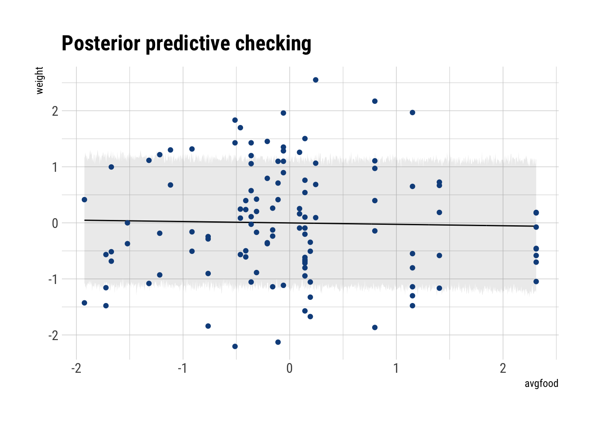

x_real <- rnorm(1000)
# spurious is correlated with real
x_spur <- rnorm(1000, x_real)
# outcome variable is only correlated with x_real
y <- rnorm(1000, x_real)
data <- data.frame(y, x_real, x_spur)Statistical Rethinking: Week 3
Week 3 gave the most interesting discussion of multiple regression. Why isn’t it enough with univariate regression? It allows us to disentagle two types of mistakes:
- Spurious correlation between the predictor and independent variable.
- A masking relationship between two explanatory variables.
It also started to introduce DAGs and how they are an incredible tool for thinking before fitting. Specially, it managed to convince me the frequent strategy of tossing everything into a multiple regression and hoping for the ebst is a recipe for disaster.
Problems Chapter 5
Medium
Invent your own example of a spurious correlation.
Thus, when we analyze the relationship between x_spur and y, it may seem as if there is a relationship.
# fit the model
model_spurious <- quap(
alist(
y ~ dnorm(mu, sigma),
mu <- a + b* x_spur,
a ~ dnorm(0, 1),
b ~ dnorm(0, 1),
sigma ~ dunif(0, 2)
),
data = data
)
# sample from posterior
samples_spurious <- extract.samples(model_spurious)
# get samples for slope
coefficient_spurious <- samples_spurious$b
precis(model_spurious) mean sd 5.5% 94.5%
a -0.01397705 0.03926831 -0.07673539 0.0487813
b 0.48773043 0.02780489 0.44329284 0.5321680
sigma 1.24242979 0.02778322 1.19802684 1.2868328Whereas when we fit a multiple regression with both coefficients, the relationship should dissapear:
# fit the model
model_with_real <- quap(
alist(
y ~ dnorm(mu, sigma),
mu <- a + b* x_spur + c* x_real ,
a ~ dnorm(0, 1),
b ~ dnorm(0, 1),
c ~ dnorm(0, 1),
sigma ~ dunif(0, 2)
),
data = data
)
# sample from posterior
samples_with_real <- extract.samples(model_with_real)
# get samples for slope
coefficient_with_real <- samples_with_real$b
precis(model_with_real) mean sd 5.5% 94.5%
a -0.003852203 0.03252227 -0.05582908 0.04812467
b -0.017186891 0.03297004 -0.06987938 0.03550560
c 0.994250135 0.04646359 0.91999235 1.06850792
sigma 1.028634063 0.02299992 0.99187575 1.06539238To make the comparison more obvious, let’s plot a ggridge with the samples from the different models.
data.frame(controlling_by_real = coefficient_with_real,
not_controlling = coefficient_spurious,
sample = seq(1, 10000)) %>%
pivot_longer(-sample) %>%
ggplot(aes(x = value, fill = name)) +
geom_histogram(color = "black", alpha = 0.7,
binwidth = 0.01) +
hrbrthemes::theme_ipsum_rc(grid = "X") +
theme(legend.position = "bottom") +
scale_fill_viridis_d() +
labs(fill = "",
title = "Multiple regression identifies spurious correlation",
subtitle = "Controlling and not controlling for real relationship",
x = "Slope's value",
caption = "Samples from the posterior for 2 different models. ")
Invent your own example of a masked relationship
First, let’s simulate the data such that:
- The outcome is correlated with both variables, but in opposite directions.
- Both predictors are correlated.
set.seed(42)
x_one <- rnorm(1000)
# relation between explanatory variables
x_two <- rnorm(1000, x_one)
# outcome is related to both
# but in opposite directions
y <- rnorm(1000, x_one - x_two)
data <- data.frame(y, x_one, x_two)Now, let’s fit two univariate models.
# fit the model that masks x_one
model_mask_one <- quap(
alist(
y ~ dnorm(mu, sigma),
mu <- a + one* x_one,
a ~ dnorm(0, 1),
one ~ dnorm(0, 1),
sigma ~ dunif(0, 2)
),
data = data
)
# fit the model that masks x_two
model_mask_two <- quap(
alist(
y ~ dnorm(mu, sigma),
mu <- a + two* x_two,
a ~ dnorm(0, 1),
two ~ dnorm(0, 1),
sigma ~ dunif(0, 2)
),
data = data
)Then, we can fit the multivariate model:
model_unmasking <- quap(
alist(
y ~ dnorm(mu, sigma),
mu <- a + one* x_one + two*x_two,
a ~ dnorm(0, 1),
one ~ dnorm(0, 1),
two ~ dnorm(0, 1),
sigma ~ dunif(0, 2)
),
data = data
)Let’s visualize how our estimates have changed once we have included both variables:
one_masked <- extract.samples(model_mask_one)$one
one_unmasked <- extract.samples(model_unmasking)$one
data.frame(sample = 1:10000,
one_masked,
one_unmasked) %>%
pivot_longer(-sample) %>%
ggplot(aes(x = value, fill = name)) +
geom_histogram(color = "black", alpha = 0.7,
binwidth = 0.01) +
hrbrthemes::theme_ipsum_rc(grid = "X") +
theme(legend.position = "bottom") +
scale_fill_viridis_d() +
labs(fill = "",
title = "Multiple regression unmasks true relationship",
caption = "Samples from the posterior of different models.",
x = "Slope")
Whereas the univariate regression, due to the unobserved variable’s effect, cannot reliably estimate the coefficient, multiple regression does the unmasking. Once we control for the correlation between the explanatory variables, the positive relationship between the first and the outcome variable is revealed.
For the other variable, that is negatively correlated with the outcome, we expect the opposite effect:
two_masked <- extract.samples(model_mask_two)$two
two_unmasked <- extract.samples(model_unmasking)$two
data.frame(sample = 1:10000,
two_masked,
two_unmasked) %>%
pivot_longer(-sample) %>%
ggplot(aes(x = value, fill = name)) +
geom_histogram(color = "black", alpha = 0.7,
binwidth = 0.01) +
hrbrthemes::theme_ipsum_rc(grid = "X") +
theme(legend.position = "bottom") +
scale_fill_viridis_d() +
labs(fill = "",
title = "Multiple regression unmasks true relationship",
caption = "Samples from the posterior of different models.",
x = "Slope")
Just as expected, multiple regression helps us unmask the true relationship. Before, due to the correlation between one and two, we were underestimating the magnitude of the relationship. Once we include one in the regression, we can estimate the true effect.
Homework Week 3
The foxes data. Let’s start working with the proposed DAG:
data("foxes")
foxes %>%
mutate(avgfood = (avgfood - mean(avgfood))/ sd(avgfood),
groupsize = (groupsize - mean(groupsize)) / sd(groupsize),
area = (area - mean(area)) / sd(area),
weight = (weight - mean(weight)) / sd(weight)) -> foxes_scaled
dag_foxes <- dagitty("dag {
area -> avgfood
avgfood -> groupsize
avgfood -> weight
groupsize -> weight
}")
drawdag(dag_foxes)
Use a model to infer the total causal influence of area on weight.
Given the DAG, we only need to run an unviariate regression to infer the causal effect of area on weight. Why? Because that there are only two connections from area to weight and none of them are backdoor connections. Thus, were we to condition on avgfood, we would “block” the pipe that leads towards weight, thus nullyfing the effect that area has on weight. Likewise with groupisze. That is, we would be incurring on post-treatment bias.
We could confirm that we do not need to control for any other variable with the dagitty package.
adjustmentSets(dag_foxes, exposure = "area", outcome = "weight") {}Once we have thought over our model, let’s posit it.
\[ weight_i \sim Normal(\mu_i, \sigma)\] \[\mu_i = \alpha + area_i \beta_{area} \]
\[ alpha \sim Normal(0, 0.2) \] \[ \beta_{area} \sim Normal(0, 0.5) \] \[ \sigma \sim Uniform(0, 1) \]
model_area_weight <- quap(
alist(
weight ~ dnorm(mu, sigma),
mu <- alpha + beta_area * area,
alpha ~ dnorm(0, 0.2),
beta_area ~ dnorm(0, 0.5),
sigma ~ dexp(1)
),
data = foxes_scaled
)Let’s do some prior predictive checks before we continue:
prior_area_weight <- extract.prior(model_area_weight, n = 100)
prior_data <- data.frame(sim = 1:100, intercept = prior_area_weight$alpha, slope = prior_area_weight$beta_area)
ggplot() +
scale_y_continuous(limits=c(-2,2)) +
scale_x_continuous(limits = c(-2, 2)) +
geom_abline(data = prior_data, aes(slope = slope, intercept = intercept, group = sim),
alpha = 0.2) +
hrbrthemes::theme_ipsum_rc() +
labs(x = "z-score area",
y = "z-score weight",
title = "Prior predictive check")
Now, let’s analyze our posterior
precis(model_area_weight) mean sd 5.5% 94.5%
alpha -7.202898e-06 0.08360131 -0.1336182 0.1336038
beta_area 1.883496e-02 0.09088645 -0.1264191 0.1640891
sigma 9.911604e-01 0.06464929 0.8878383 1.0944824According to our DAG and our statistical fitting, there is no causal relationship between area and weight.
posterior_area_weight_slope <- link(model_area_weight, data = data.frame(area = seq(-2.5, 2.5, length.out = 100)))
mu <- apply(posterior_area_weight_slope, 2, mean)
posterior_area_weight <- sim(model_area_weight, data = data.frame(area = seq(-2.5, 2.5, length.out = 100)))
interval <- apply(posterior_area_weight, 2, PI, prob = 0.75)
left_interval <- interval[1,]
right_interval <- interval[2,]
data.frame(mu, interval, left_interval, right_interval,
area = seq(-2.5, 2.5, length.out = 100)) %>%
ggplot(aes(area, mu)) +
geom_line() +
geom_ribbon(aes(ymin = left_interval,
ymax = right_interval),
alpha = 0.1) +
geom_point(data = foxes_scaled,
mapping = aes(x = area, y = weight),
alpha = 0.8, color = "dodgerblue4") +
hrbrthemes::theme_ipsum_rc() +
labs(x = "area",
y = "weight",
title = "Posterior predictive checking")
Accordingly, our fit to the data is terrible. Thus, we conclude that increasing the area available to each fox won’t make them heavier.
Now infer the causal impact of adding food to a territory. Would this make foxes heavier? Which covariate do you need to adjust for to estimate the total causal influence of food?
Given our DAG, there are two paths from avgfood to weight. However, none of them are a backdoor. Thus, we do not need to adjust for any other variable to identify the causal effect of avgfood on weight.
We can confirm this using dagitty:
adjustmentSets(dag_foxes, exposure = "avgfood", outcome = "weight") {}Once we have thought over our model, let’s posit it.
\[ weight_i \sim Normal(\mu_i, \sigma)\] \[ \mu_i = \alpha + avgfood_i \beta_{avgfood} \]
\[ alpha \sim Normal(0, 0.2) \] \[ \beta_{avgfood} \sim Normal(0, 0.5) \] \[ \sigma \sim Uniform(0, 1) \] Let’s fit our model
model_food_weight <- quap(
alist(weight ~ dnorm(mu, sigma),
mu <- alpha + avgfood * beta_avgfood,
alpha ~ dnorm(0, 0.1),
beta_avgfood ~ dnorm(0, 0.5),
sigma ~ dexp(1)),
data = foxes_scaled
)
precis(model_food_weight) mean sd 5.5% 94.5%
alpha -3.116427e-06 0.06771658 -0.1082273 0.1082211
beta_avgfood -2.421115e-02 0.09088693 -0.1694660 0.1210437
sigma 9.911655e-01 0.06466209 0.8878230 1.0945081Just as before, given our DAG, our statistical analysis and our data, there is no causal effect of avgfood on weight. Thus, increasing the avgfood won’t lead to heavier foxes.
Let’s plot our predictions
food_data <- data.frame(avgfood = seq(min(foxes_scaled$avgfood),
max(foxes_scaled$avgfood),
length.out = 1000))
sim_mu <- link(model_food_weight, data = food_data)
mu <- apply(sim_mu, 2, mean)
sim_interval <- sim(model_food_weight, data = food_data)
interval <- apply(sim_interval, 2, PI, prob = 0.75)
left_interval <- interval[1,]
right_interval <- interval[2,]
cbind(food_data, data.frame(mu),
left_interval, right_interval) %>%
ggplot(aes(avgfood, mu)) +
geom_line() +
geom_ribbon(aes(ymin = left_interval,
ymax = right_interval),
alpha = 0.1) +
geom_point(data = foxes_scaled,
aes(x = avgfood, y = weight),
color = "dodgerblue4") +
hrbrthemes::theme_ipsum_rc() +
labs(x = "avgfood",
y = "weight",
title = "Posterior predictive checking") 
Accordingly, our fit is terrible.
Now infer the causal impact of group size. Which covariates do you need to adjust for? Looking at the posterior distribution of the resulting model, what do you think explains these data? That is, can you explain the estimates for all three problems? How do they go together?
Given our DAG, there are two paths from groupsize to weight. And of them has a backdoor through which our estimates will be confounded. That is, given that in our bayesian network the information flows freely, if we run an univariate regression, the coefficient for groupsize will pick up the effect of avgfood on weight too. Therefore, we need to control for avgfood to close this backdoor. Let’s confirm this with dagitty
adjustmentSets(dag_foxes, exposure = "groupsize", outcome = "weight"){ avgfood }Let’s formulate our model:
\[ weight_i \sim Normal(\mu_i, \sigma)\] \[ \mu_i = \alpha + avgfood_i \beta_{avgfood} + groupsize_i \beta_{groupsize} \]
\[ alpha \sim Normal(0, 0.2) \] \[ \beta_{avgfood} \sim Normal(0, 0.5) \] \[ \beta_{groupsize} \sim Normal(0, 0.5) \]
\[ \sigma \sim Uniform(0, 1) \]
model_gropusize_weight <- quap(
alist(
weight ~ dnorm(mu, sigma),
mu <- alpha + beta_avgfood * avgfood + beta_groupsize * groupsize,
alpha ~ dnorm(0, 0.1),
beta_avgfood ~ dnorm(0, 0.5),
beta_groupsize ~ dnorm(0, 0.5),
sigma ~ dexp(1)
),
data = foxes_scaled
)
precis(model_gropusize_weight) mean sd 5.5% 94.5%
alpha 1.503414e-06 0.06583598 -0.1052171 0.1052201
beta_avgfood 4.772644e-01 0.17912227 0.1909924 0.7635364
beta_groupsize -5.735414e-01 0.17914071 -0.8598429 -0.2872400
sigma 9.420381e-01 0.06175160 0.8433471 1.0407291Given our DAG, statistical analysis and data, we conclude that:
- Conditioning on groupsize, the average food available increases the weight of the foxes
- The larger the groupsize, adjusting for avgfood, the lower the weight of the foxes.
- Avgfood and area have two causal channels through which it influences the foxes’ weight. It increases the food available to them, which helps them get heavier. But it also increases the groupsize. Thus, they get thinner. These effects in opposite directions end up cancelling the overall causal effect of area or avgdfood on weight.
**If one were to intervene to increase the foxes’ weight, one would need to increase the avgfood available to them while maintaining the groupsize constant.